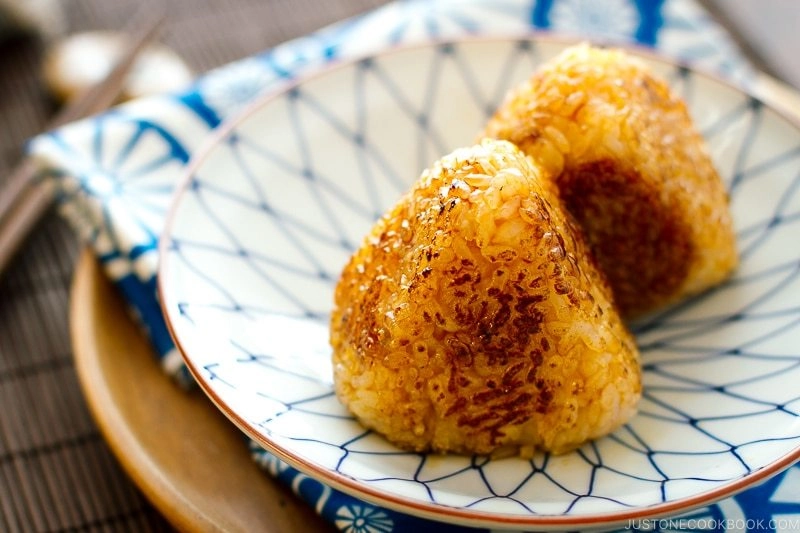

Yaki Onigiri

Description
Lightly brushed with savory soy sauce, these grilled Japanese rice balls are simply irresistible. It requires only rice, salt, and sweet and soy sauce (or my take, delicious Unagi Sauce! It can be a store-bought or my homemade recipe on the blog). You can make them plain or stuffed them with fun fillings such as canned salmon. They are so easy to make that you want to grill them up at home!
Ingredients
- 2 rice cooker cups uncooked Japanese short-grain rice
- 400 ml water
- 1 Tbsp kosher/sea salt
- 1 Tbsp neutral-flavored oil
- soy sauce
Steps
- Gather all the ingredients. Cook the rice with a rice cooker, a pot over the stove, an instant pot, or a donabe. Let the cooked rice cool a little bit until you can hold rice without burning your hands. Do not let the rice completely cool down.
To Make Rice Balls
- First, wet both of your hands with water so the rice won’t stick.
- Then put some salt in your hands and rub to spread all around.
- Scoop about a half cup of rice onto your palm.
- Cover the rice with the other hand and gently form the rice into a triangle.
- Make sure the covering hand (my right hand) should be forming a triangle shape. When forming the onigiri shape, your hands should be just firm enough so the onigiri doesn't fall apart. You don't want to squeeze the rice too tight.
- I use three fingers (thumb, index finger, middle finger) to cover the area to make a nice triangle shape. Then rotate onigiri to make a perfect triangle.
- While you squeeze onigiri firmly with both hands, one of your hands has to press onigiri to keep a nice form.
- Gently squeeze the center of the triangle on both sides so there is a slight indentation (for grilling onigiri). Now onigiri is ready! You can tell I’m not a good onigiri maker – no matter how many years I have been practicing.
The rest of setps please refer to here.